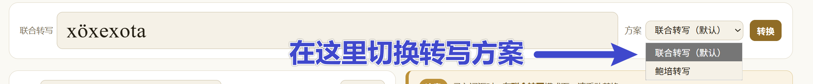
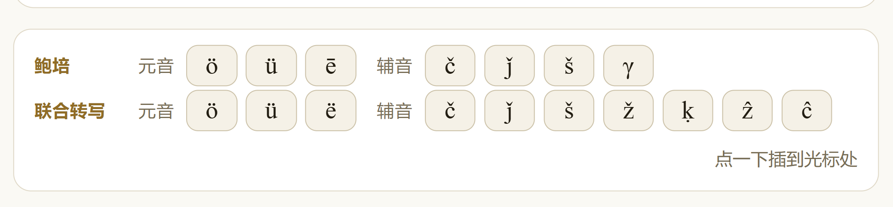
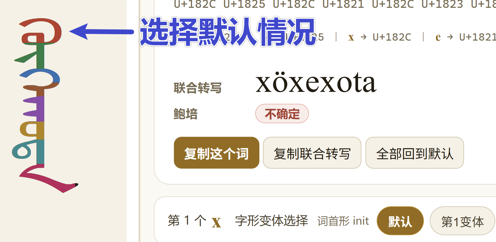
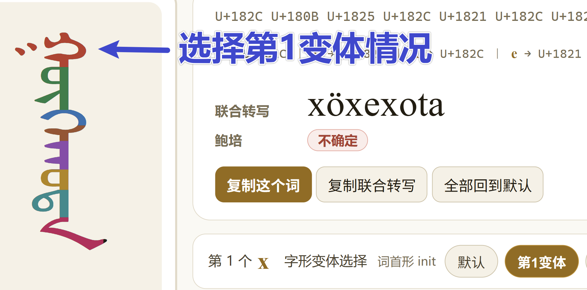
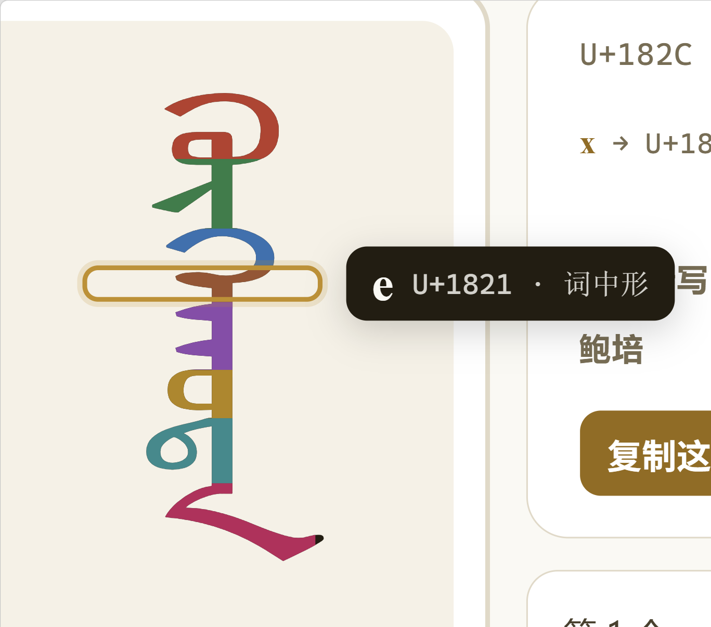
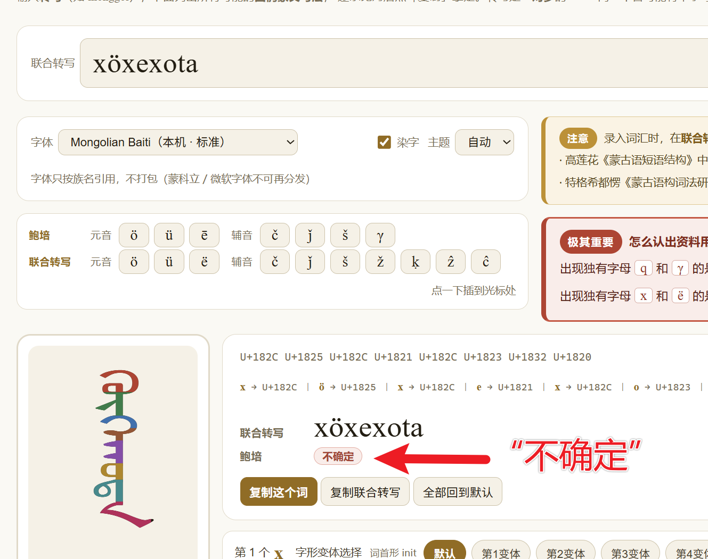
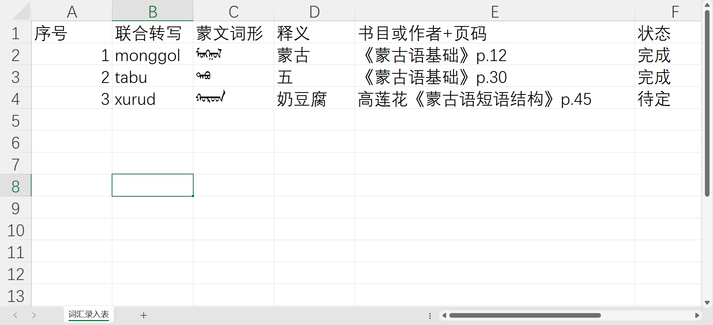
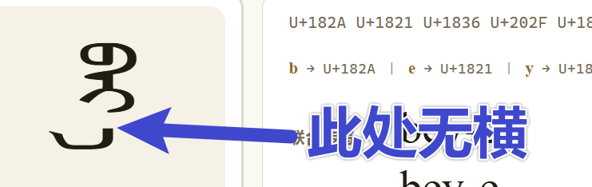
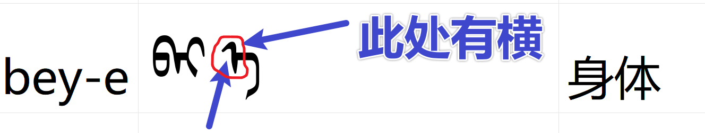

词汇录入规范
UME 项目组内部教程 · R05（Related） · 给负责词汇录入的组员
这份规范只讲一件事：怎么把教材上的词，一个一个字地对成回鹘蒙文，然后抄进表里。 不需要写代码，不需要会读会写蒙文，也不需要装蒙文输入法。
1你不需要会这些
- 写代码
- 会读、会写蒙文，或用蒙文写句子
- 学会蒙文输入法、用键盘敲蒙文
- 设计字体、了解字体格式
会看汉语释义 · 会照着教材比形状 · 会复制粘贴。
2你要做什么
从教材词表里挑 500 个以上常用词，逐个在 popmon 里比对出正确字形， 把联合转写、"蒙文词形"、"释义" 抄进记录表。
选词倾向
别全挑名词 —— 名词约占一半，动词、形容词、数词量词、虚词都要有。
- 名词优先日常高频：人体、亲属、饮食、动物、自然、器物、时间、方位
- 具体数量按教材词表实际情况分配，不必凑整
- 专业术语（高尔基体、量子隧穿）
- 专名、外来语
- 带后缀的变形 —— 只收词干（
ger-tü、morin-u这类要改成词干）
这里不需要你学习语法。如果遇到这种带横线或下划线的， 你可以在「状态」列中特殊标出，交给组长处理。
3开工前先看这些
下面六条看不懂就问 AI，不必背。
① 蒙文是连写的
一个字母有 4 种形态：独立 / 词首 / 词中 / 词尾。起步只要先认独立形和词尾形。
② 转写是把蒙文写成拉丁字母
本项目用两套转写：联合转写（工具默认）和鲍培转写。 popmon 两套都接受，切换方案即可 —— 同一段蒙文，两套方案会写成不同的字母串。
③ 判别教材用的是哪套
出现 q、γ 的是 鲍培；出现 x、ë 的是 联合。
④ 区分「书面转写」和「读音标注」
教材上的注音有两种：转写直接用拉丁字母写；读音一般用
[ ] 或 / / 括起来。你要录的是转写，不是读音。
严格来讲那是「书面读音」，也就是转写。所以不要看栏目标题，要看里面的字母：
- 转写：出现独有字母
qγ（鲍培）或ë（联合）， 以及öüčǰšžḳẑĉ中的任何一个 - 读音：出现长音记号
ː，或音标əʊæɔ中的任何一个
- 转写：
xū - 读音：
/ɕy˥˥/
蒙文同理：写作 qaγan（转写），今天读作 /xaːn/（读音）——
录的是前者。
⑤ 元音分阴阳
阳性 a o u / 阴性 e ö ü / 中性 i。
⑥ 元音和谐律
一个词内的元音通常同类。反例是合成词：
「呼和浩特」= köke + qota（前半阴性、后半阳性）。
这类词在 popmon 里会显示「不确定」，见第 5 节。
4每个词怎么录
下面按顺序走一遍。每一步都配了 popmon 的截图，照着做即可。
第 1 步 · 挑词、记页码
从教材词表挑一个词，记下书目或作者+页码 —— 后面要填进表里。
第 2 步 · 打开 popmon
直接打开 popmon.html （也可以从首页第 4 张卡「转换 · popmon 转写 → 蒙文」进去）。
第 3 步 · 选对转写方案
按第 ③ 条判断教材用的是哪套，然后在输入框右边的「方案」下拉里选。
默认是联合转写；教材标的是 q／γ 就切到鲍培转写。

选错了会怎样：输入框变红、上方弹出提示，点提示里的按钮一键切换。
第 4 步 · 输入转写
输入这个词的转写。有三处要手动改：
- 教材用
h的，改成x - 教材用
ŋ的，改成ng - 教材用
j的，改成ǰ
那些不好用键盘打出来的字母（ö ü ē č
ǰ š γ …），输入框下面专门备了两排按钮：
上一排是鲍培的，下一排是联合转写的。点一下，字母就插到光标位置。

第 5 步 · 比对字形（最关键的一步）
左边那个窄高的框里是渲染出来的词，右边标着它的码位。 下面的「第 N 个 … 字形变体选择」就是可选项：每个字母都有「默认」和若干「第 N 变体」。
拿左边的字形去比教材上那个词：点数、“牙齿”数、“撇和捺”。 不一样就换一个变体，再比一次。


第 6 步 · 用「染字」和悬停核对
打开上方那个 「染字」 勾选框，词里每个字母会染成不同颜色 —— 一眼就能看出「教材上的第 3 个字」对应屏幕上哪个字。 把鼠标停在某个字上，它会被方框圈住，右边浮窗写明这个字的转写值。

e（U+1821，词中形）。第 7 步 · 复制并填表
点 「复制这个词」 拿蒙文词形、点 「复制联合转写」 拿拉丁串， 粘进记录表；再填上 "释义" 和 书目或作者+页码。
粘到 Excel 里显示可能不正常，但那只是显示问题 —— 见 第 6 节的说明。
第 8 步 · 遇到「不确定」
如果鲍培那一行显示「不确定」，不要猜。 怎么处理见下一节。
5「不确定」是什么
popmon 的结果框里会同时给出两种转写。只有「鲍培」那一行可能显示「不确定」，
「联合转写」那一行永远不会 ——
因为【蒙文字母】→【联合转写】是双射（一个字母对一个符号，反过来也唯一）；
而【蒙文字母】→【鲍培转写】不是单射（同一个 ᠬ 既可以写成 q，也可以写成 k）。

xöxexota（呼和浩特）时的样子联合转写一行照原样还回
xöxexota；
鲍培一行打上「不确定」—— 因为这是 köke + qota 的合成词，
构件边界在字形上看不见，没法判断每个 ᠬ 读 k 还是 q。- 不要猜。猜出来的写法会污染整个词表。
- 「状态」那一列填 「待定」，继续录下一个词。
- 全部录完后，把「待定」的那些统一交组长复核 —— 组长有词典和考订材料。
另有一种「打错方案」的情况：如果你在联合转写模式下输入了鲍培才有的字母， 输入框会变红、上方弹出提示，点按钮切换方案即可（第 4 节第 3 步）。
6记录表：怎么填、怎么交
用哪个文件
用 Excel 或 WPS 打开： vocabulary/词汇录入表.xlsx
（在仓库根目录的 vocabulary/ 下，点上面链接可下载。）
不要直接在这个文件上改，也不要把填好的表提交回仓库 ——
先「另存为」你自己的副本（如 词汇录入表-张三.xlsx）再填。
里面已经排好版式，照着往下填即可。长这样：

A 序号 · B 联合转写 · C 蒙文词形 · D 释义 · E 书目或作者+页码 · F 状态。 前三行是例词，从第 5 行往下填。
列的顺序
| 列 | 填什么 | 从哪来 |
|---|---|---|
| 序号 | 1、2、3…… | 自己往下编 |
| 联合转写 | monggol 这样的拉丁串 | popmon「复制联合转写」 |
| 蒙文词形 | ᠮᠣᠩᠭᠣᠯ | popmon「复制这个词」 |
| 释义 | 蒙古 | 教材上的汉语释义 |
| 书目或作者+页码 | 《蒙古语基础》p.12 | 你挑词的那一页 |
| 状态 | 完成 / 待定 | 下拉选 |
从 popmon 复制的蒙文，粘进 Excel 单元格后可能长得不一样。
以 bey-e（身体）为例，同一个词、同一串码位：


差别来自字体与排版（Excel 用的是它自己的蒙文字体）， 单元格里的码位是对的 —— 不影响最终正确性，录入者无需理睬。
想确认真的粘对了：把单元格里的内容再复制回 popmon 的输入框，
看码位是否与原来一致（bey-e 应为
U+182A U+1821 U+1836 U+202F U+1821）。
三个例词
模板的前三行就是例子，每个示范一件事：
monggol蒙古 ——ng用单字母 ᠩ（U+1829），不是 n + gtabu五 —— 短词、无变体，录完直接「复制这个词」xurud奶豆腐 —— 教材若写qurud（鲍培），联合转写要换成xurud
怎么交
填完后：文件 → 另存为 → 文件类型选「CSV（逗号分隔）」→ 保存，文件名保持
词汇录入表.csv。WPS 同理：另存为 → CSV。
Excel 会问「是否只保存当前工作表」，选「是」即可（我们只有一张表）。
交上来的 csv 应该长这样：
序号,联合转写,蒙文词形,释义,书目或作者+页码,状态 1,monggol,ᠮᠣᠩᠭᠣᠯ,蒙古,《蒙古语基础》p.12,完成
7收尾与自查
- 每录完 50 个词自查一次：转写与字形是否对得上、有无重复。
- 全部录完后，用 AI 检查是否混入了变形（如
ger-tü、morin-u）； 如果无法判断是否为词干，则在「状态」中标出来。
选常用词 → 选对方案 → 输转写 → 点变体对字形 → 两个复制按钮 → 粘贴 → 标状态。